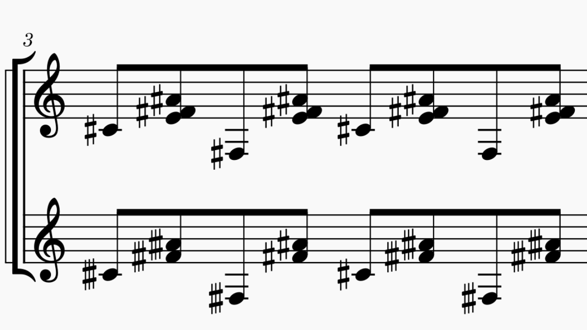

Composition and Microtonality
-
 May 12, 2025
Translating Birdsong into Music: Temperament and Structural Choices
This composition explores the transformation of natural birdsong into music using the 24-tone equal temperament (24-TET) system. While Pythagorean or meantone temperaments face challenges in modulating to such irregular...
May 12, 2025
Translating Birdsong into Music: Temperament and Structural Choices
This composition explores the transformation of natural birdsong into music using the 24-tone equal temperament (24-TET) system. While Pythagorean or meantone temperaments face challenges in modulating to such irregular...
-  May 10, 2025 A Cheerful Melody Created by Quarter-Tone Clashes This project explores a notational and structural approach to dividing the 15/4 just interval into equal steps of 15, 10, and 5, inspired by Bohlen–Pierce concepts but diverging from it in tuning and application. Each subdivision is notated...